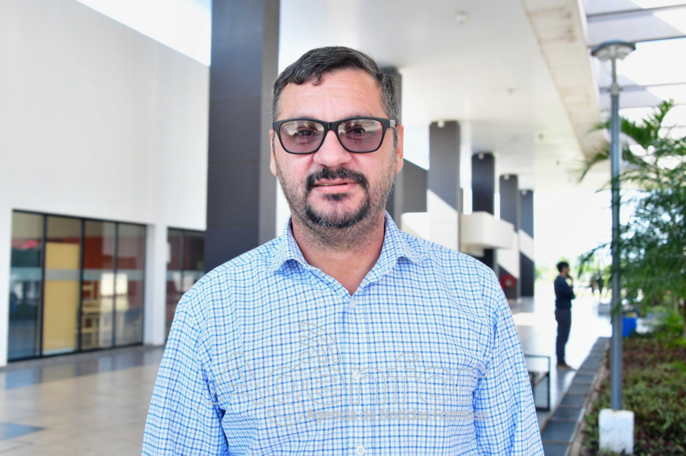
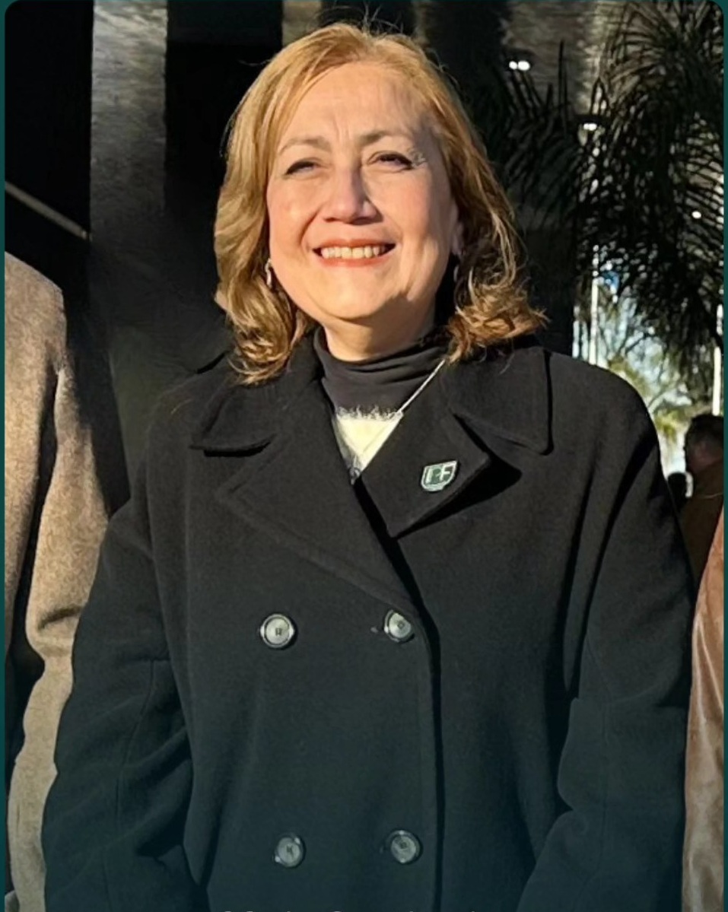
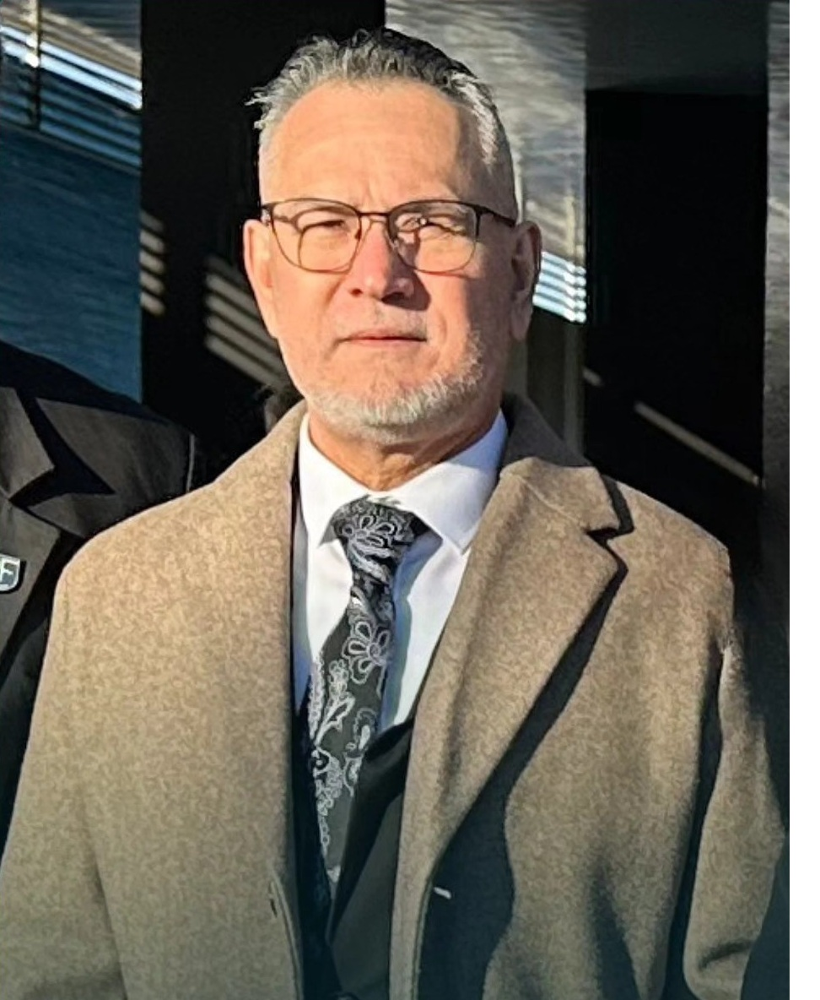
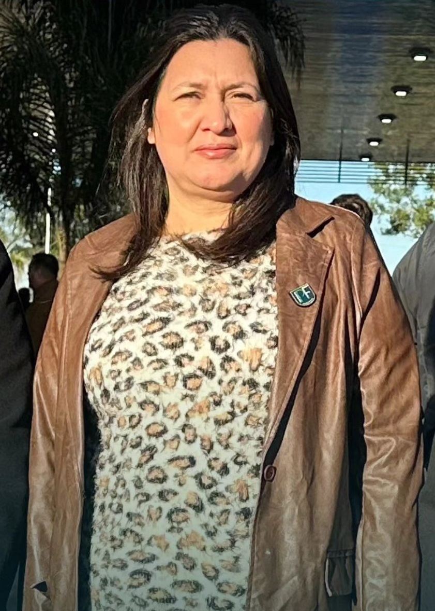
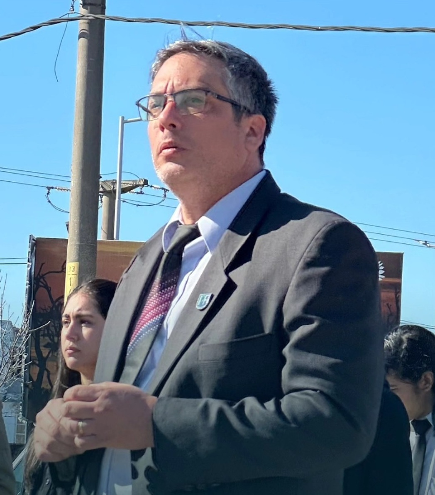
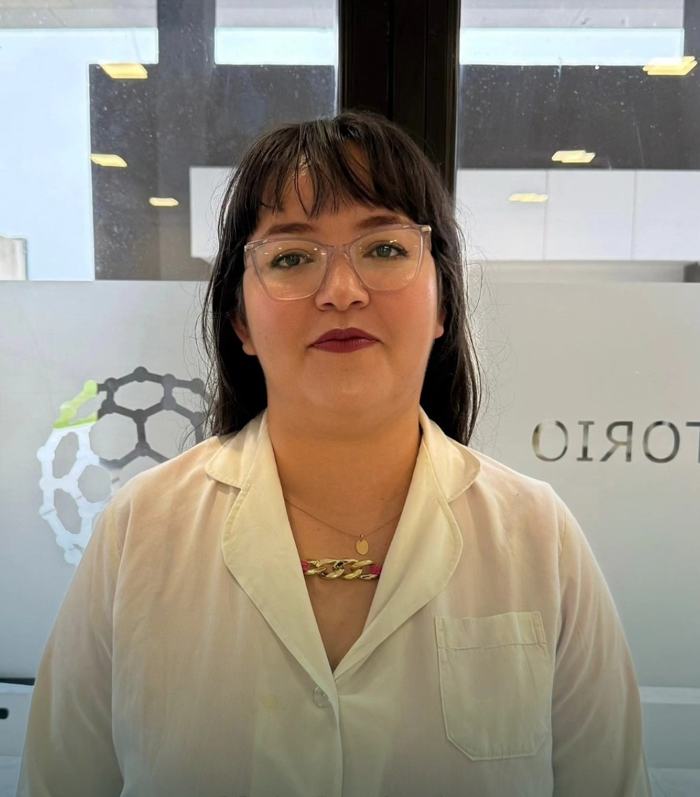

La historia del Instituto Politécnico Formosa y su Tecnicatura Superior en Mecatrónica se remonta a julio de 2013, cuando surgió la idea de crear un Polo Científico, Tecnológico e Innovación (PCTI) cerca de la ciudad de Formosa. Esto impulsó discusiones sobre trayectos formativos adaptados a las necesidades provinciales y del mercado laboral, envisionando un instituto tecnológico que integrara teoría y práctica.
Orígenes y Desarrollo Conceptual (2013-2014)
Tras una audiencia pública para el PCTI, se propuso una formación paralela al polo, destacando la Tecnicatura en Mecatrónica como carrera clave. Esta combinaría ciencias básicas, electrónica, mecánica e informática, preparando egresados para integrar equipos en producción, control y operación de maquinaria industrial. Se analizaron planes de estudio de pocas instituciones argentinas existentes y se exploraron nexos con especialistas. En 2014, con un perfil de egresado más definido, se revisaron currículos nacionales e internacionales, consultando egresados y expertos. La mecatrónica se define como una disciplina sinérgica que une electrónica, mecánica, control automático y TI para diseñar sistemas electromecánicos inteligentes, resolver problemas industriales y fomentar innovación.
Diseño Curricular y Creación Institucional (2016-2018)
Hacia fines de 2016 y durante 2017, se colaboró con la Dirección de Educación Técnica de Formosa, el Ingeniero Petzl del INET, y el formoseño Francisco Pielmann (egresado de UTN Córdoba), asesorados por el Ministerio de Educación. Esto generó estándares curriculares y un documento base, discutido con autoridades locales. El 31 de enero de 2018, por Decreto Provincial N° 18/2018, se creó el Instituto Politécnico Formosa, enfocado en articular estudio-trabajo, investigación-producción y teoría-práctica. Su misión: formar técnicos para producción industrial, servicios de alta tecnología y sectores afines.
La tecnicatura, de tres años de duración, habilita a egresados para configurar, supervisar y optimizar equipos de automatización (mecánica, neumática, hidráulica, eléctrica y electrónica), siguiendo protocolos de calidad y seguridad, e incluso diseñar nuevos sistemas. El proceso incluyó entrevistas a especialistas, docentes potenciales y gestiones para equipamiento.
Inicio de Clases
Las clases comenzaron el 19 de marzo de 2018 en la EPET N° 1, con 40 alumnos iniciales, marcando el lanzamiento efectivo de esta iniciativa estratégica para el desarrollo tecnológico de Formosa.Misión, Visión y Estructura Organizativa
Visión
Somos una institución de educación superior de avanzada, dedicada a desarrollar procesos sistemáticos de formación que articulan el estudio, el trabajo, la investigación y la producción. Nuestro propósito es formar técnicos altamente capacitados para integrarse en equipos de producción industrial y servicios de alta tecnología, contribuyendo al desarrollo socioeconómico de la provincia.
Misión
Consolidarnos como un referente regional en innovación educativa y tecnológica, donde la teoría y la práctica converjan para responder a los desafíos del mercado global, promoviendo la optimización de procesos y el diseño de sistemas inteligentes bajo estándares de calidad y seguridad.
Estrutura organizativa
- Consejo Directivo: Responsable de las definiciones políticas y pedagógicas del instituto.
- Secretaría Académica: Encargada de la gestión de los planes de estudio, calendarios escolares y la coordinación de las trayectorias formativas de los estudiantes.
- Coordinación de Carrera: Responsables de áreas específicas como Mecatrónica, Desarrollo de Software, Telecomunicaciones o Quimica Industrial.
- Prácticas Profesionalizantes: Área dedicada a establecer nexos con el IPF y empresas del sector para la inserción y práctica de los alumnos.
- Infraestructura y Equipamiento: Gestión de los laboratorios y recursos tecnológicos necesarios para la formación técnica.
Autoridades de Instituto Politecnico Formosa

Dr. Horacio Gorostegui
Director del Instituto Politecnico Formosa

Dr. Alicia Alcaraz
Directora de Carreras

Mgtr. Miguel Matero Badaracco
Director de Tec. Sup. Desarrollo de Software Multiplataforma

Ing. Constanza Román
Directora de Tec. Sup. Telecomunicaciones

Ing. Federico Escobar
Director de Tec. Sup. Mecatronica

Prof. Mariel Trinidad
Directora de Tec. Sup. Quimica Industrial